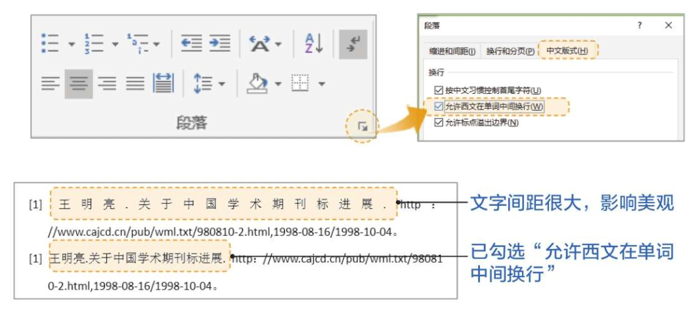

Chap 1-大众误区
兼容性问题解决：单击【文件】->【另存为】，选择.docx格式另存一份，或者直接单击【文件】->【信息】->【转换-兼容模式】来解决问题。
格式标记：在Word中存在许多非打印字符，用来辅助编辑、排版和校对。如何显示和隐藏这些非打印字符呢？
- 【开始】->【段落】->【显示/隐藏编辑标记】，快捷键是
ctrl+*。 - 【文件】->【选项】->【显示】，去掉所有勾选。
- 【文件】->【选项】->【校对】，去掉勾选“键入时检查拼写”和“键入时标记语法错误”
全/半角空格：空格分为全角和半角，全角空格相当于一个汉字，占两个字符的位置；半角空格相当于一个字母，占一个字符的位置。在【显示编辑标记】的情况下，全角空格显示为小方框，半角空格显示为小圆点。
- 不要使用空格键来居中对齐和右对齐：使用专门的段落对齐的按钮。
- 不要使用空格键来实现首行缩进：通过段落格式设定【首行缩进2字符】，严禁敲空格或者tab键实现。
标尺：标尺是能够直观看到并控制文档对齐方式和页边距留白的一个工具。它默认单位是“字符”，这样可以统一度量刻度，更加方便对齐。
打开方式：【视图】->【显示】->【标尺】
水平标尺的四种工具：
应用场景：实现多行落款实现“居中对齐”和“右对齐”，选中两行落款，按快捷键Ctrl+E，使其居中对齐，然后拖动标尺左下角的矩形滑块，将其整体拖动到右侧合适位置即可。
应用场景：判断居中对齐的图片是否真的居中，观察首行缩进的标尺的位置是否和左缩进一致。
应用场景：如果表格数据始终无法居中对齐，可以观察这些文字是否有缩进。
制表位：能够在不使用表格的情况下快速对齐文本，实际上就是“看不见”的表格线。制表位英文名是Tab stop，实际上就是制表键停止的位置。
添加制表位的方式有两个，方式一是从标尺处直接添加，方式二是从段落设置中添加。
用法：在文字段落中按Tab键即可添加一个制表符，从而把光标后边的文字“推”到下一个制表位处。通过拖曳调节制表位，能迅速调整一行中多栏文字的对齐位置。
应用场景：
软回车和硬回车：硬回车是物理段落，软回车是逻辑段落，Word中将物理段落识别为一个整体，使用Shift+Enter输入软回车。
替换软回车为硬回车：查找替换功能，查找
^l（注：此处是小写的字母l），在替换为处输入^P，单击“替换”按钮即可。注意，不要使用回车来控制段落之间的间距，Word中有专门的工具【段落间距】，分为段前间距和段后间距。
注意，不要使用回车来分页，使用【分页符】，使用Ctrl+Enter输入。
自动编号：
- 依次单击【文件】->【选项】->【校对】->【自动更正选项】->【键入时自动套用格式】，去掉“自动项目符号列表”和“自动编号列表”的勾选，这样Word就再也不会自动给你编号了。
- 编号样式都是可调的，例如序号和文字间距等，有时编号和文字之间的间隔会很大，我们只需将光标放置在含有自动编号的段落，在右键菜单中单击“调整列表缩进”选项，在弹出的窗口中对“编号位置”“文本缩进”“编号之后”等选项进行调整。
自动保存：
- 设置自动保存间隔时间：具体操作是依次单击【文件】→【选项】→【保存】，设置保存自动恢复信息时间间隔为X分钟，并勾选“如果没保存就关闭，则保留上次自动保留的版本”。
- 自动备份：Word高级选项中，可以启用Word自带的“始终创建备份副本”功能，用户在关闭Word文档时将自动创建该文档的副本文件，以备不时之需！依次单击【文件】→【选项】→【高级】，在右侧下拉列表找到“保存”区域，勾选“始终创建备份副本”。这样设置以后，每次编辑Word时，Word会自动保存一个副本，文件名为“备份属于 ******.wbk”。
实用快捷键：
- F4：重复上一步操作，例如用于重复表格插入新行的操作。
- Alt：显示对应菜单和功能的快捷键，例如依次按Alt+N+T+I，就能快速插入表格。
- F1：打开帮助菜单。
Chap 2-排版流程：这样做才专业
Word排版的两种模式：
- 改造Word文档：排除障碍，清除原有的格式。
- 清除全文格式：按快捷键Ctrl+A，选择全文，单击【开始】->【字体】->【清除格式】菜单。
- 清除全文空行：按快捷键Ctrl+H，打开【查找替换】对话框，查找内容中输入p，替换内容中输入^p，单击【全部替换】按钮，重复单击几次【全部替换】按钮，直至全部替换
- 清除无用空格：如首行缩进是用空格打的，PDF复制过来有多余空格等，按快捷键Ctrl+H打开【查找替换】对话框，查找内容中输入^w，替换内容中不输入任何内容，单击【全部替换】按钮。
- 边录入边排版：
- 整体规划：排版之前就需要根据要求做好页面设置和样式格式设置。确定纸张大小、方向、页边距、页眉页脚的距离等。确定好各级别内容的文本格式与段落格式以便在第三步里一键套用。
- 内容录入：录入文字、图片、表格、图标等内容。
- 高效排版：完成内容录入后，就需要根据格式要求快速套用样式，完成整个文档的编号制作、目录生成、页眉页脚设计以及页码的添加等操作。
- 归档输出：对于只使用一次的文档排版完成后归档即可，需要重复使用的文档可以在完成排版之后存为模板文件供以后重复调用。
整体规划：
- 整体规划分为：页面设置 -> 样式设计
- 页面设置：
- Word的页面构造：
- 页面构造相关内容的调整在【布局】->【页面设置】中。
- 应用场景：设置双面打印并留出装订线，在【页面设置】->【页边距】->【页码范围】中选择【对称页边距】
- 样式设计：
- 文本样式：包含字体、段落、编号、边框等。
- 表格样式：包含边框、底纹、字体、段落等。
内容录入：添加文本、图片、表格等元素，相关内容在【插入】中。
Chap 3-排版之本：排版前你需要知道这些
选中文本的技巧：
- 选中连续文本：不要按住鼠标左键拖动，使用Shift键，将鼠标放在待选文本前，按住Shift键不放，然后单击待选文本后的位置。
- 选中不连续文本：按住Ctrl键，再用鼠标选中即可。
- 竖向选择文本：按住Alt键，再用鼠标选中即可。
- 快速选中整句：按住Ctrl键，在待选中的句子之间任意位置单机一下即可。
- 快速选中整行/整段：将鼠标移动到页面最左侧，单击选中整行，双击选中整段。
图片环绕方式：
嵌入型：在这种方式中，图片相当于一个字符，嵌入型图片会受制于行间距或文档网格设置。
四周型：文字会留下一个矩形的区域用于显示图片。
紧密型：以直线为轮廓环绕对象。
穿越型：根据图片外形，出现在每个凹陷处。
插入图片的正确方式：
- 错误方式：复制->粘贴或者直接将图片拖入文档，这会将图片相关信息全部贴入文档导致Word文档无意之中变得庞大。
- 正确方式：【插入】->【图片】。
- 无损插入方式：Word会默认自动压缩图片，可以在【文件】->【选项】->【高级】->【图像大小和质量】->“勾选不压缩文件中的图像”即可。
选中图片的正确方式：【开始】->【编辑】->【选择】->【选择窗格】，可以显示页面中的所有元素，这时会方便直接选中。
固定图片位置的三种方式：
- 将图片设置为嵌入式，图片就不会随文字移动而移动了。
- 在环绕模式中，去掉“对象随文字移动”的勾选，图片就会被固定在当前位置。
- 在环绕模式中，将锚和图片捆绑，图片就只能在页面内移动而无法挪移到下一页。操作方法：【右键单击图片】->【大小和位置】->【布局】->【位置】->勾选“锁定标记”选项->【确定】。
统一图片尺寸：如果文档中有多个图片，统一尺寸会更加整洁。操作方法：选中图片->【图片格式】->【大小】，可以直接输入大小或者按页面比例调整。
开启智能对齐参考线：【布局】->【排列】->【对齐】。
多图并排技巧：无框表格法，根据图片数量插入相应大小的表格，将图片依次填入表格中，并为相应图片插入图题，最后将表格框线去除。
- 插入表格并对表格进行设置：
- 按照预想的图片排列方式插入表格。
- 在【表格工具】->【布局】->【对齐方式】->【单元格边距】中将“自动重调尺寸以适应内容”取消勾选，否则图片过大会占满表格的空间。
- 插入图片及题注：
- 从【插入】选项卡插入图片，右键图片插入题注。
- 在【表格工具】->【布局】->【对齐方式】中调整为“靠下居中对齐”。
- 去除边框：在【表格工具】->【设计】->【边框】中选择“无框线”。
表格添加斜线：选中需要添加斜线的单元格单击右键->【表格属性】->【表格】->【边框和底纹】->右侧选择向左或向右斜线即可。注意，如果需要添加多条斜线，那就需要使用【插入】->【形状】中绘制直线的功能了。
表格跨页继承表头：选中表格标题行->【布局】->【数据】->【重复标题行】。
过宽表格排版：将过宽表格所在页横置
- 在表格前方的竖向页低端插入一个分节符，【布局】->【页面设置】->【分隔符】->【分节符】->”下一页”。
- 在表格后方再插入一个分节符。
- 将表格所在页改为横向，【页面设置】->【纸张方向】。
Chap 4-排版特技：被你忽视的排版秘笈
样式相关：
- 【正文】样式是Word内置段落样式的基准，会牵一发而动全身，因此不要修改内置的【正文】样式。
- 【大纲级别】是为文档中的段落指定等级结构（1-9级）的段落格式，用于描述文档的层次关系。
- 标题类样式建议修改内置样式，正文类样式建议新建样式。
解决中英文混排导致文字间距过大的情况：

关于分节符：
- “节”是Word文档格式化的最大单位，实现节功能的是分节符，它是一节的结束符号。
- 以下内容可以在前后节中被设置为不同格式：
- 纸张大小或方向：可以是横竖交叉；
- 打印机纸张来源：可以是不同大小的纸张；
- 页面边距：可以宽窄不同；
- 文本对齐方式：可以按不同的缩进量对齐；
- 页眉和页脚：可以设置为不同的内容；
- 页码编号：可以中断而后重新计数。
页眉处添加当前章节实时标题的方法：
双击页眉处，【插入】->【文本】->【文档部件】->【域】，选择StyleRef，选择“标题1”，插入两次，第一次插入时勾选“插入段落编号”，第二次不要勾选。

脚注删除：要删除正文中自动生成的上标，而非删除脚注内容。
Chap 5-排版之道：怎么排版才好看
常用的设计原则：留白、聚拢、对齐、对比、重复
解决微软雅黑字体行间距过大问题：【段落】->【缩进与间距】->【间距】->取消勾选“如果定义了文档网格，则对齐到网格”。
Chap 6-职场之道：不加班，要加薪
删除多余空格：【开始】->【替换】->【更多】->【特殊格式】->【空白区域】->【查找内容】内自动填充^w->【替换】留空→【全部替换】。